전자산업기사 (2003-03-16 기출문제)
1과목: 전자회로
1. SSB 전파를 검파할 수 없는 것은?
- 평형 복조기
- 링(Ring) 복조기
- 주파수 변환기
- 드레인(Drain) 복조회로
(정답률: 54%)

2. 그림과 같은 발진회로에 관한 설명 중 옳은 것은?
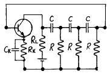
- C와 R을 사용하여 부궤환으로 발진시킨 것이다.
- 다이나트론에 의한 부성저항과 C로 발진시킨 것이다.
- C 및 R로서 정궤환에 의하여 발진시킨 것이다.
- 컬렉터의 LC동조회로를 C 및 R로 베이스에 결합한 것이다.
(정답률: 42%)
3. 다음 논리회로(logic block diagram) 중 출력 Y가 논리적으로 같지 않은 것은?
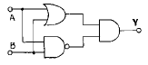
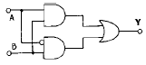
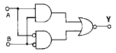
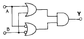
(정답률: 50%)
4. 주 반송자(Majority carrier)가 전자인 반도체는?
- N형 반도체
- 진성 반도체
- P형 반도체
- PN형 반도체
(정답률: 60%)
5. 이상적인 연산 증폭기(Op-Amp)의 특징이 아닌 것은?
- 출력 임피던스가 무한대
- 입력 임피던스가 무한대
- 전압 이득이 무한대
- 대역폭이 무한대
(정답률: 82%)
6. 이상적인 다이오드로 구성된 다음의 정류 회로에서 V=100sinωt[V] 일 때 저항 R=5[㏀]에 흐르는 평균 전류는?
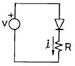
- 4.7 mA
- 5.5 mA
- 6.37 mA
- 7.8 mA
(정답률: 42%)
7. 그림과 같은 pulse 파형에서 실제 응답된 펄스 파형이 펄스 진폭의 뒷 부분이 꿩와 같이 감쇠되는 것을 무엇이라고 하는가?
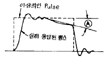
- Over shoot
- Under shoot
- Ringing
- Sag
(정답률: 50%)
8. 그림과 같은 회로에서 컬렉터 전류 Ic는?
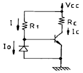
- Ic=βI+βIo+Ico
- Ic=βI+βIco
- Ic=βI-βIo+(1+β)Ico
- Ic=βI-βIo+βIco
(정답률: 42%)
9. 다음 설명 중 옳지 않은 것은?
- 전력 효율은 전원 전력 소비량을 적게하면서 신호 출력을 크게 할 수 있느냐 하는 지수를 말한다.
- A급 전력 증폭기의 컬렉터 손실은 무신호시에 가장 작다.
- B급 전력 증폭기는 출력이 최대 가능 출력의 약 40%일 때 컬렉터 손실이 가장 크다.
- C급 전력 증폭기는 신호 출력의 첨두치에서 가장 큰 손실이 발생한다.
(정답률: 67%)
10. A, B 두개의 변수로 구성된 논리 함수의 최소항에 속하지 않는 것은?
- AB
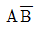
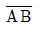
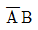
(정답률: 64%)
11. 부하저항 RL=16Ω 에 20V의 신호를 공급한 B급 증폭기의 입력전력 Pi와 출력전력 Po는 약 얼마인가? (단, 전원전압 VCC=30V이다.)
- Pi=24W, Po=13W
- Pi=34W, Po=23W
- Pi=44W, Po=33W
- Pi=54W, Po=43W
(정답률: 64%)
12. 정현파 발진회로가 아닌 것은?
- 동조형 발진회로
- 콜피츠 발진회로
- 이상형 RC발진회로
- 톱니파 발진회로
(정답률: 71%)
13. 그림의 회로에서 궤환비(β)는?
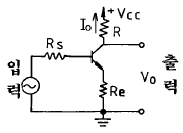
- -Re
- -1
- -RL
- -(Re+RL)
(정답률: 50%)
14. 출력 단자에 보호(protection) 회로가 필요한 Gate는?
- MOS Gate
- DTL Gate
- TTL Gate
- ECL Gate
(정답률: 52%)
15. 보기의 그림과 같은 입력(Vi)에 정현파를 인가 했을 때 얻어지는 출력 파형과 같은 파형이 얻어지는 회로는?
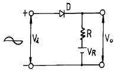
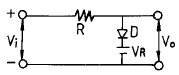
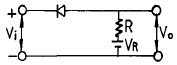
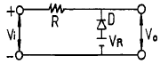
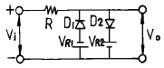
(정답률: 56%)
16. 트랜지스터 증폭 회로에서 입력 저항은 매우 작고, 출력 저항이 매우 큰 것은?
- 푸시 풀(Push-pull)방식
- 이미터 접지방식
- 컬렉터 접지방식
- 베이스 접지방식
(정답률: 60%)
17. 도면과 같은 회로에서 저항 RL을 통해 흐르는 전류는?
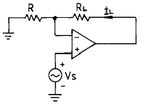
- Vs/R+RL
- Vs/RL
- Vs/R
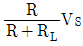
(정답률: 29%)
18. 다음 논리식에서 옳지 않은 것은?
- A+A=A
- A*A=A
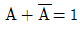
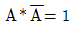
(정답률: 81%)
19. 차동증폭기에서는 동상제거비(CMRR)가 클 수록 양호한 특성을 갖는다. 이상적으로 CMRR=∞ 인 차동증폭기에서는 회로에서 발생하는 잡음이 출력 단자에 어떻게 나타나는가?
- 발생한 잡음의 크기 그대로 나타난다.
- 발생한 잡음은 증폭되어 출력에 나타난다.
- 발생한 잡음의 크기보다 작아져서 나타난다.
- 잡음이 발생하여도 출력 단자에는 나타나지 않는다.
(정답률: 81%)
20. (13)10을 Gray Code로 변환하면?
- 1001
- 1100
- 1011
- 1010
(정답률: 74%)
2과목: 전기자기학 및 회로이론
21. i=I1sinωt+I2cosωt의 최대값은?
- I1+I2
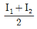
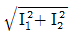
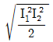
(정답률: 52%)
22. 한변의 길이가 1m인 정방형 도체 회로에 전류 √2π[A]를 흘릴 때 회로의 중심에서 자계의 세기는 몇 AT/m 인가?
- 1
- 2
- 3
- 4
(정답률: 13%)
23. 콘덴서를 그림과 같이 접속했을 때 CX의 정전용량은 몇 μF 인가? (단, C1=C2=C3=3μF이고 ab사이의 합성정전용량은 5μF이다.)
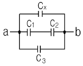
- 0.5
- 1
- 2
- 4
(정답률: 55%)
24. 전류의 세기가 I[A], 반지름 r[m]인 원형 선전류 중심에 m[Wb]인 가상 점자극을 둘 때 원형 선전류가 받는 힘은 몇 N 인가?
- mI/2r
- mI/2πe
- mI2/2πr
- mI/2r2
(정답률: 47%)
25. 그림과 같이 동심 도체구에서 내구 A를 접지하고 외구 B에만 전하를 줄 때 전기력선의 분포에 대한 설명 중 옳은 것은?
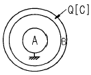
- 전기력선은 외구 밖에만 존재한다.
- 전기력선은 내구와 외구사이에만 존재한다.
- 전기력선은 내구와 외구사이뿐만 아니라 외구 밖에도 존재한다.
- 전기력선은 어느 곳에도 존재하지 않는다.
(정답률: 42%)
26. R-L 직렬 회로에서 교류 전압을 가했더니 R 양단에 4[V], L 양단에 3[V]가 나타났다.이 때 인가 전압은?
- 4√3V
- 2√3V
- 7V
- 5V
(정답률: 43%)
27. 일정한 정현파 전류가 일정한 용량을 갖는 인덕터의 양단에 인가되고 있다. 만약, 인덕터의 인덕턴스가 증가되었을 경우 이 때의 유도전압은?
- 감소한다.
- 변화가 없다.
- 증가한다.
- 차단된다.
(정답률: 40%)
28. 투자율 1000μo[H/m]인 철심에 코일을 감고 일정한 전류 15A를 흘리고 있다. 회로의 길이가 1m일 때 자기저항이 R1[AT/Wb]이고, 이 회로에 미소공극 1mm를 만들면 자기 저항이 R2가 되었다고 한다. R2는 R1의 몇 배인가?
- 1/2
- 2
- 4
- 10
(정답률: 50%)
29. 회로의 전압 전달 함수는?
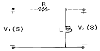
- LS/R+LS
- LS/R
- R+LS/LS
- 1
(정답률: 42%)
30. 인덕턴스 L1, L2가 각 각 3[mH], 6[mH]인 두코일 간의 상호 인덕턴스 M이 4[mH]라고 하면 결합계수 K는?
- 약 0.11
- 약 0.94
- 약 0.44
- 약 0.67
(정답률: 68%)
31. 진공 중에 있는 점전하 Q[C]으로부터 R[m] 떨어진 점의 전위는 몇 V 인가?
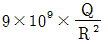
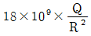
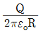
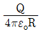
(정답률: 44%)
32. 사용되는 전자파의 파장이 가장 긴 것부터 순서대로 나열한 것은?
- 전자렌지-살균 소독-사진 전송-레이다
- 레이다-사진 전송-살균 소독-전자렌지
- 사진 전송-레이다-살균 소독-전자렌지
- 전자렌지-살균 소독-레이다-사진 전송
(정답률: 66%)
33. 옴(ohm)의 법칙에서 전압은?
- 전류에 비례한다.
- 전류에 반비례한다.
- 전류의 제곱에 비례한다.
- 전류와 무관하다.
(정답률: 68%)
34. 평행판콘덴서의 극판사이가 진공일 때의 용량을 Co, 비유전률 εs의 유전체를 채웠을 때의 용량을 C 라할 때, 이들의 관계식은?
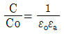
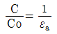
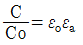
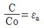
(정답률: 42%)
35. 회로에서 전류 I와 저항 R에 흐르는 전류 IR 이 같을 때 정현파 전압의 주파수를 f라 하면 f, L, C의 관계는?
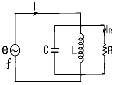
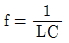
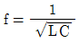
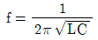
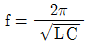
(정답률: 70%)
36. 그림과 같은 대칭 T형 회로의 단락 임피던스 ZIS[Ω]은?
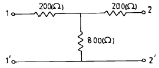
- 360
- 400
- 800
- 1000
(정답률: 63%)
37. 2㎌의 콘덴서에 100V로 어떤 전하를 충전시킨뒤 콘덴서의 양단을 200Ω 의 저항으로 연결하면 저항에서 소모되는 총 에너지는 몇 J인가?
- 0.01
- 0.1
- 1
- 10
(정답률: 50%)
38. F(S)=1의 역 Laplace 변환 f(t)는?
- 1
- u(t)
- δ(t)
- t
(정답률: 80%)
39. 코일에 있어서 자기인덕턴스는 다음의 어떤 매질 상수에 비례하는가?
- 저항률
- 유전률
- 투자율
- 도전률
(정답률: 56%)
40. 자위의 단위에 해당되는 것은?
- A
- Ｊ/C
- N/Wb
- Gauss
(정답률: 42%)
3과목: 전자계산기일반
41. 2진 고정 소수점 수의 음수 표현 방식이 아닌 것은?
- Signed-magnitude
- Signed-one's Complement
- Signed-two's Complement
- Signed-zero's Complement
(정답률: 60%)
42. ALU의 입력과 출력 자료의 임시 기억을 목적으로 하며, CPU 내에 연산용 레지스터가 한 개 뿐일 때를 무엇이라고 하는가?
- 인덱스 레지스터
- 어드레스 레지스터
- 어큐뮬레이터
- 명령 레지스터
(정답률: 60%)
43. 레지스터 내의 비트 중 일부분을 보수화시킬 때 사용될 수 있는 마이크로 동작은?
- 마스크(mask)
- 배타적 OR
- OR
- 논리
(정답률: 57%)
44. 마이크로프로세서를 구성하는 주요 3 부분 간의 상호 데이터 접속은 무엇을 통하여 이루어지는가?
- external bus
- memory bus
- address bus
- internal bus
(정답률: 33%)
45. 입력 어드레스 선이 8개, 출력 데이터 선이 8개인 ROM의 기억 용량은 몇 바이트인가?
- 64
- 128
- 256
- 512
(정답률: 71%)
46. 다음 도표의 기호는 순서도(flowchart)에서 무엇을 나타낼 때 사용되는가?
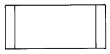
- 소트(sort)
- 서브처리(predefined process)
- 자기드럼
- 천공카드
(정답률: 63%)
47. 마이크로프로세서, 메모리, 주변 인터페이스 상호간에 필요한 정보를 교신하는데 쓰이는 공동의 전송선로는?
- bus
- buffer
- multiplexer
- decoder
(정답률: 78%)
48. MOS내에 전하로 기억시킨 내용을 자외선을 쬐여 그 내용을 지울 수 있고 다시 다른 내용을 기록할 수 있는 장치는?
- DRAM
- SRAM
- PROM
- EPROM
(정답률: 60%)
49. 다음 연산의 종류를 단항(unary)연산과 이항(binary)연산으로 구별할 때 단항 연산을 하는 연산자가 아닌 것은?
- Complement
- Move
- AND
- Shift
(정답률: 72%)
50. 어떤 시스템에서 데이터의 전송 속도가 200bps라고 할 때 이 시스템에 10초간 전송하는 데이터는 모두 몇 bit인가?
- 2
- 20
- 200
- 2000
(정답률: 75%)
51. 컴퓨터 자료처리 방식의 분류에 속하지 않는 것은?
- 중앙집중식 처리
- 온라인 실시간처리
- 시분할처리
- 일괄처리
(정답률: 50%)
52. 프로그램 인터럽트 요인 발생 시 반드시 확인해야 할 CPU 상태가 아닌 것은?
- 프로그램 카운터의 내용
- 모든 레지스터의 내용
- 상태 조건의 내용
- 현재 명령의 내용
(정답률: 57%)
53. 패리티 비트(parity bit)에 대한 설명으로 옳지 않은 것은?
- 한 개의 비트만으로 간단하게 구현할 수 있다.
- 2 비트 이상의 오류를 검출할 수 있다.
- 오류를 교정할 수 없다.
- 데이터에 패리티 비트를 추가해서 사용한다.
(정답률: 71%)
54. 프로그램의 서브루틴 호출과 복귀를 처리할 때 이용되는 것은?
- 스택
- 큐
- ROM
- 프로그램 카운터
(정답률: 83%)
55. 어떤 명령이 실행되기 위해서 가장 먼저 이루어지는 마이크로 오퍼레이션은?
- MBR ← PC
- PC ← PC+1
- IR ← MBR
- MAR ← PC
(정답률: 86%)
56. 데이터 통신용으로 널리 사용되고 마이크로 컴퓨터에서 많이 채택되고 있는 코드는?
- ASCII 코드
- BCD 코드
- EBCDIC 코드
- Gray 코드
(정답률: 74%)
57. 1024× 8비트 ROM의 경우 최소한 몇 개의 Address line이 필요한가?
- 8
- 9
- 10
- 11
(정답률: 74%)
58. 다음 덧셈 명령 가운데 2 주소(address) 명령 형식에 해당하는 것은?
- ADD R1,R2,R3
- ADD R1,R2
- ADD R1
- ADD
(정답률: 78%)
59. 드 모르간(De Morgan)의 정리를 옳게 나타낸 것은?
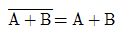
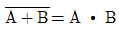
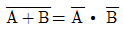
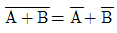
(정답률: 75%)
60. 다음 흐름도를 표시하는 기호 중 라인프린터 출력을 의미하는 것은?
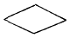
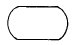
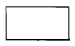
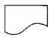
(정답률: 81%)
4과목: 전자계측
61. 디지털 계측기에 관한 특징이 아닌 것은?
- 전압, 전류, 저항 값 등을 연속적으로 간단하게 측정한다.
- 표시되는 지시 값의 눈금을 읽는데 개인 오차를 가지기 쉽다.
- 계수기의 진보와 함께 극히 정도가 높은 계측이 가능하다.
- 시간적으로 빨리 측정할 수 있다.
(정답률: 68%)
62. 가동철편형 계기에 대한 설명 중 옳지 않은 것은?
- 직류 전용이다.
- 눈금은 실효치로 되어 있다.
- 전압계보다는 전류계로 많이 쓰인다.
- 흡입형, 반발형 및 흡입 반발형이 있다.
(정답률: 71%)
63. 피측정 주파수를 계수형 주파수계로 측정한 결과 1초에 반복한 횟수가 60번 이었다. 피측정 주파수는?
- 1 [Hz]
- 60 [Hz]
- 1/60 [Hz]
- 360 [Hz]
(정답률: 82%)
64. 그림과 같은 교류 브리지가 평형 되었을 때 L의 값은?
- L=CR1R2
(정답률: 77%)
65. 정전형 계기의 특징이 아닌 것은?
- 눈금이 자승눈금으로 된다.
- 실효치 눈금이므로 파형오차가 있다.
- 교류, 직류 양용계기로 주파수 특성이 좋다.
- 고전압 측정에 적합하다.
(정답률: 24%)
66. 오차 백분율에 해당하는 식은?(단 M은 측정값, T는 참값이다.)
(정답률: 83%)
67. 저주파 측정에 사용되는 측정법은?
- 공진 브리지법
- 레헤르선 주파수계
- 흡수형 주파수계
- 헤테로다인 주파수계
(정답률: 44%)
68. 주파수의 영향이 가장 큰 계기는?
- 유도형
- 열전형
- 전류력계형
- 가동철편형
(정답률: 49%)
69. 저주파 발진기에 흔히 쓰이는 빈 브리지의 장점이 아닌 것은?
- 일그러짐이 적다.
- 입력 특성이 좋다.
- 출력 특성이 좋다.
- 발진 주파수가 안정하다.
(정답률: 68%)
70. 다음 그림과 같은 원리도를 가지는 주파수계는?
- 딥메터
- 공동 주파수계
- 흡수형 주파수계
- 헤테로다인 주파수계
(정답률: 67%)
71. 가동 코일형 계기의 설명 중 옳지 않은 것은?
- 직류 전용이다.
- 소비 전력이 대단히 적다.
- 감도가 대단히 우수하다.
- 평등눈금이지만 만능계기로 적용되지 못한다.
(정답률: 60%)
72. 소인 발진기를 사용할 때 병행하는 계기는?
- 고주파 발진기
- 감쇠기
- 진공관 전압계
- 오실로스코프
(정답률: 82%)
73. 정밀 헤테로다인 주파수계의 측정 상 주의할 점 중 옳지 않은 것은?
- 전원 전압은 규정 값으로 유지할 것
- 피측정 회로에 너무 밀결합 시키지 말 것
- 보간 발진기의 f - c 곡선은 수시 교정할 것
- 교정 후 정밀 측정은 단 시간 내에 하지 않을 것
(정답률: 52%)
74. 트리거 스위프식 오실로스코프의 회로구성에서 빈칸 안에 알맞은 것은?
- 적분회로
- 트리거회로
- 차동증폭회로
- 입력 절환회로
(정답률: 87%)
75. 감쇠기의 입력전류 및 전압을 I1 및 V1, 출력전류 및 전압을 I2 및 V2라 하면 감쇠량은 어떤 값을 나타내는가?
(정답률: 34%)
76. 전력 증폭기에서 출력 저항을 측정하는 주된 이유는?
- 전류 이득을 계산하기 위해서
- 전압 이득을 계산하기 위해서
- 주파수 응답 특성을 알기 위해서
- 부하 저항과의 정합을 이루기 위해서
(정답률: 55%)
77. 그림과 같은 임피던스 브리지(Impedance Bridge)에서 Lx의 값은?
(정답률: 83%)
78. 역률이 0.001인 콘덴서의 Q는?
- 10
- 100
- 1,000
- 10,000
(정답률: 88%)
79. 진동편형 주파수계의 특징 중 옳지 않은 것은?
- 지시가 연속적이다.
- 지시의 신뢰성이 높다.
- 1000[Hz] 이하에서 사용된다.
- 구조가 간단하고, 전압의 파형에 영향이 없다.
(정답률: 40%)
80. 내부 저항이 무한대인 전압계로 A-B간의 전압을 측정하면 얼마인가?
- 3V
- 6V
- 10V
- 15V
(정답률: 77%)